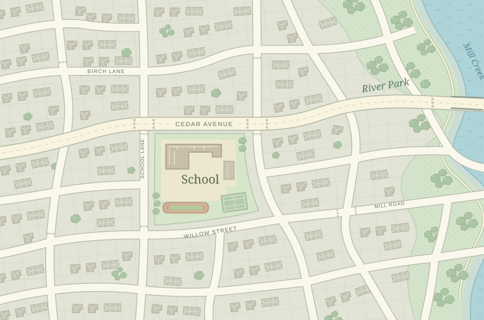

School crossing planner
Two guards. Which crossings?
Try covering the two busiest corners. Then move one guard and see who else you reach.
Oakfield School
Fictional map
Drag a guard, or tap a guard and then an open crossing.
Student reach
/
students pass at least one guarded crossing
Compared with the two busiest crossings, .
Who gets counted twice?
Explore all placements
Choose any pair
The number in each cell is the students reached. Darker cells reach more students.
Download the 100 simulated routesPublic evidence · QoreChain Diana
Can you verify the count?
Three client processes on one computer submitted a separate survey on testnet. Open the signed round, then remove a wallet’s contribution and try again.
Contribution ledger
Ready to checkRun the verifier to check each wallet’s signature and match the public round commitment.
| Wallet | A + B | A + C |
|---|---|---|
| Students reached |
Wallet rows show signed, masked numbers. Adding each column modulo 2³² cancels the masks.
Try a private survey with your group.
Invite 3–12 adults by QR and use hypothetical routes. Adult field trials on separate devices are pending.